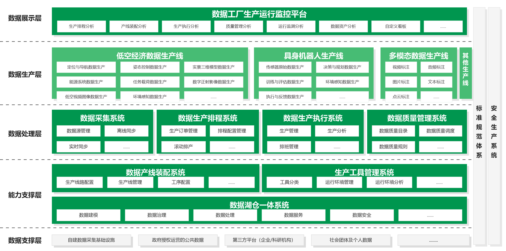

围绕数据全生命周期管理，打造三大核心能力，构建从数据采集到价值变现的完整链路。
构建全链路采集处理体系，打通数据壁垒，提供协同能力，实现重点场景全要素贯通。
依托智能工具与标准体系，建立数据提炼机制，面向多方实现多源数据处理，形成高质量可复用数据资产集。
深度治理原始数据，挖掘深层价值，推动向可交易、复用的数据服务转化。
数据工厂提供从多模态数据处理到业务定制化产出的全链路能力，满足多样化的数据生产需求。
实现对结构化数据的采集、处理、治理与管理，同时完成多模态数据的离线处理及离线训练，涵盖数据表、图片、视频、音频、文本等多种类型。
利用数据标注工具开展训练样本的人工标注、智能标注以及人工审核工作，涉及图片、视频、文本等类型。
依据多模态数据的处理场景与特性，对多模态数据处理流程进行一定程度的中台抽象与封装，构建标准化、可复用的数据处理产线。
可从中台模型产线中进行选择并调用，随后对产线输出结果进行面向业务的定制化后加工，确保多模态数据在线提炼成珍贵的数据稀土。
数据工厂构建五层架构，形成数据柔性、标准、高质量生产闭环，支撑数据全生命周期的高效运转。

* 数据工厂五层架构设计示意图，可在功能上线后进一步调整优化
整合自建数据采集基础设施、政府授权运营的公共数据、第三方平台（企业/科研机构）、社会团体及个人数据等多元数据来源，为数据工厂提供原始数据，支撑全流程闭环。
构建数据湖仓一体系统集中管理数据资源；数据产线装配系统优化生产线路配置与工序管理，支撑规范运转；生产工具管理系统纳管各类工具，支撑工序编排与运行环境分析。
构建数据采集系统实现多源数据对接与实时同步；数据生产排程系统自动生成计划并派发工单；数据生产执行系统负责生产管理与分析；数据质量管理系统建立质量目标与巡检机制，保障数据输出质量。
打造生产流水线赋能三大领域：低空经济数据生产线覆盖定位导航、姿态控制、能源系统等低空数据；具身机器人生产线助力传感器、决策规划等数据自主进化；多模态数据生产线集成视频标注、图片标注等能力支撑AI模型训练。
通过数据工厂生产运行监控平台实时追踪生产排程、产线装配、执行分析、质量管理、运行监测、数据资产等全维度状态，通过智能分析反哺优化，实现数据生产柔性化、标准化、高质量闭环。